if (!require("pacman")) install.packages("pacman")
pacman::p_load(
sf, # vector data operations
dplyr, # data wrangling
data.table, # data wrangling
tmap, # make maps
mapview, # create an interactive map
patchwork # arranging maps
)2 Vector Data Basics with sf
Before you start
In this chapter we learn how to use the sf package to handle and operate on spatial datasets. The sf package uses the class of simple feature (sf)1 for spatial objects in R. We first learn how sf objects store and represent spatial datasets. We then move on to the following practical topics:
1 Yes, it is the same as the package name.
- read and write a shapefile and spatial data in other formats (and why you might not want to use the shapefile system any more, but use other alternative formats)
- project/re-project spatial objects
- convert
sfobjects intospobjects, vice versa2 - confirm that
dplyrworks well withsfobjects - implement non-interactive (does not involve two
sfobjects) geometric operations onsfobjects- create buffers
- find the area of polygons
- find the centroid of polygons
- calculate the length of lines
2 The sf package is a successor of the sp package, which has been one of the most popular and powerful spatial packages in R for more than a decade. There are still some spatial R packages that work with sp but not with sf. For this reason, we will learn how to convert sp objects into sf objects, and vice vera.
To test your knowledge, you can work on coding exercises at Section 2.10.
Direction for replication
Datasets
All the datasets that you need to import are available here. In this chapter, the path to files is set relative to my own working directory (which is hidden). To run the codes without having to mess with paths to the files, follow these steps:
- set a folder (any folder) as the working directory using
setwd()
- create a folder called “Data” inside the folder designated as the working directory (if you have created a “Data” folder to replicate demonstrations in Chapter 1, then skip this step)
- download the pertinent datasets from here
- place all the files in the downloaded folder in the “Data” folder
Packages
Run the following code to install or load (if already installed) the pacman package, and then install or load (if already installed) the listed package inside the pacman::p_load() function.
2.1 Spatial Data Structure
Here we learn how the sf package stores spatial data along with the definition of three key sf object classes: simple feature geometry (sfg), simple feature geometry list-column (sfc), and simple feature (sf). The sf package provides a simply way of storing geographic information and the attributes of the geographic units in a single dataset. This special type of dataset is called simple feature (sf). It is best to take a look at an example to see how this is achieved. We use North Carolina county boundaries with county attributes (Figure 2.1).
#--- a dataset that comes with the sf package ---#
nc <- sf::st_read(system.file("shape/nc.shp", package = "sf"))Reading layer `nc' from data source
`/Library/Frameworks/R.framework/Versions/4.5-arm64/Resources/library/sf/shape/nc.shp'
using driver `ESRI Shapefile'
Simple feature collection with 100 features and 14 fields
Geometry type: MULTIPOLYGON
Dimension: XY
Bounding box: xmin: -84.32385 ymin: 33.88199 xmax: -75.45698 ymax: 36.58965
Geodetic CRS: NAD27Code
ggplot(nc) +
geom_sf() +
theme_void()As you can see below, this dataset is of class sf (and data.frame at the same time).
class(nc)[1] "sf" "data.frame"Now, let’s take a look inside of nc.
#--- take a look at the data ---#
head(nc)Simple feature collection with 6 features and 14 fields
Geometry type: MULTIPOLYGON
Dimension: XY
Bounding box: xmin: -81.74107 ymin: 36.07282 xmax: -75.77316 ymax: 36.58965
Geodetic CRS: NAD27
AREA PERIMETER CNTY_ CNTY_ID NAME FIPS FIPSNO CRESS_ID BIR74 SID74
1 0.114 1.442 1825 1825 Ashe 37009 37009 5 1091 1
2 0.061 1.231 1827 1827 Alleghany 37005 37005 3 487 0
3 0.143 1.630 1828 1828 Surry 37171 37171 86 3188 5
4 0.070 2.968 1831 1831 Currituck 37053 37053 27 508 1
5 0.153 2.206 1832 1832 Northampton 37131 37131 66 1421 9
6 0.097 1.670 1833 1833 Hertford 37091 37091 46 1452 7
NWBIR74 BIR79 SID79 NWBIR79 geometry
1 10 1364 0 19 MULTIPOLYGON (((-81.47276 3...
2 10 542 3 12 MULTIPOLYGON (((-81.23989 3...
3 208 3616 6 260 MULTIPOLYGON (((-80.45634 3...
4 123 830 2 145 MULTIPOLYGON (((-76.00897 3...
5 1066 1606 3 1197 MULTIPOLYGON (((-77.21767 3...
6 954 1838 5 1237 MULTIPOLYGON (((-76.74506 3...Just like a regular data.frame, you see a number of variables (attributes) except that you have a variable called geometry at the end. Each row represents a single geographic unit (here, county). Ashe County (1st row) has area of \(0.114\), FIPS code of \(37009\), and so on. And the entry in geometry column at the first row represents the geographic information of Ashe County. An entry in the geometry column is a simple feature geometry (sfg), which is an \(R\) object that represents the geographic information of a single geometric feature (county in this example). There are different types of sfgs (POINT, LINESTRING, POLYGON, MULTIPOLYGON, etc). Here, sfgs representing counties in NC are of type MULTIPOLYGON. Let’s take a look inside the sfg for Ashe County using st_geometry().
sf::st_geometry(nc[1, ])[[1]][[1]][[1]]
[,1] [,2]
[1,] -81.47276 36.23436
[2,] -81.54084 36.27251
[3,] -81.56198 36.27359
[4,] -81.63306 36.34069
[5,] -81.74107 36.39178
[6,] -81.69828 36.47178
[7,] -81.70280 36.51934
[8,] -81.67000 36.58965
[9,] -81.34530 36.57286
[10,] -81.34754 36.53791
[11,] -81.32478 36.51368
[12,] -81.31332 36.48070
[13,] -81.26624 36.43721
[14,] -81.26284 36.40504
[15,] -81.24069 36.37942
[16,] -81.23989 36.36536
[17,] -81.26424 36.35241
[18,] -81.32899 36.36350
[19,] -81.36137 36.35316
[20,] -81.36569 36.33905
[21,] -81.35413 36.29972
[22,] -81.36745 36.27870
[23,] -81.40639 36.28505
[24,] -81.41233 36.26729
[25,] -81.43104 36.26072
[26,] -81.45289 36.23959
[27,] -81.47276 36.23436As you can see, the sfg consists of a number of points (pairs of two numbers). Connecting the points in the order they are stored delineates the Ashe County boundary (Figure 2.2).
Code
plot(sf::st_geometry(nc[1, ]))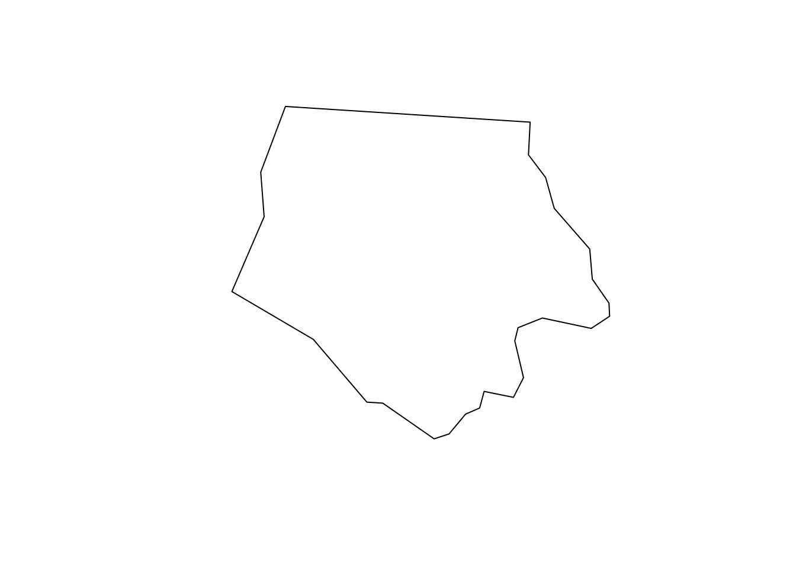
We will take a closer look at different types of sfg in the next section.
Finally, the geometry variable is a list of individual sfgs, called simple feature geometry list-column (sfc).
dplyr::select(nc, geometry)Simple feature collection with 100 features and 0 fields
Geometry type: MULTIPOLYGON
Dimension: XY
Bounding box: xmin: -84.32385 ymin: 33.88199 xmax: -75.45698 ymax: 36.58965
Geodetic CRS: NAD27
First 10 features:
geometry
1 MULTIPOLYGON (((-81.47276 3...
2 MULTIPOLYGON (((-81.23989 3...
3 MULTIPOLYGON (((-80.45634 3...
4 MULTIPOLYGON (((-76.00897 3...
5 MULTIPOLYGON (((-77.21767 3...
6 MULTIPOLYGON (((-76.74506 3...
7 MULTIPOLYGON (((-76.00897 3...
8 MULTIPOLYGON (((-76.56251 3...
9 MULTIPOLYGON (((-78.30876 3...
10 MULTIPOLYGON (((-80.02567 3...Elements of a geometry list-column are allowed to be different in nature from other elements3. In the nc data, all the elements (sfgs) in geometry column are MULTIPOLYGON. However, you could also have LINESTRING or POINT objects mixed with MULTIPOLYGONS objects in a single sf object if you would like.
3 This is just like a regular list object that can contain mixed types of elements: numeric, character, etc
2.2 Simple feature geometry, simple feature geometry list-column, and simple feature
Here, we learn how different types of sfg are constructed. We also learn how to create sfc and sf from sfg from scratch.4
4 Creating spatial objects from scratch may not be a necessary skill for many of us as economists, but it is still useful to understand the underlying structure of spatial data. Occasionally, the need arises. For example, I had to construct spatial objects from scratch when designing on-farm randomized nitrogen trials. In such cases, it is important to understand how different types of sfg objects are constructed, how to create an sfc from a collection of sfgs, and finally, how to build an sf object from an sfc.
2.2.1 Simple feature geometry (sfg)
The sf package uses a class of sfg (simple feature geometry) objects to represent a geometry of a single geometric feature (say, a city as a point, a river as a line, county and school district as polygons). There are different types of sfgs. Here are some example feature types that we commonly encounter as an economist5:
5 You can see here if you are interested in other types of sfgs.
-
POINT: area-less feature that represents a point (e.g., well, city, farmland) -
LINESTRING: (e.g., a tributary of a river) -
MULTILINESTRING: (e.g., river with more than one tributary) -
POLYGON: geometry with a positive area (e.g., county, state, country) -
MULTIPOLYGON: collection of polygons to represent a single object (e.g., countries with islands: U.S., Japan)
2.2.1.1 POINT
POINT is the simplest geometry type and is represented by a vector of two numeric values. An example below shows how a POINT feature can be made from scratch:
The st_point() function creates a POINT object when supplied with a vector of two numeric values. If you check the class of the newly created object,
#--- check the class of the object ---#
class(a_point)[1] "XY" "POINT" "sfg" you can see that it’s indeed a POINT object. But, it’s also an sfg object. So, a_point is an sfg object of type POINT.
2.2.1.2 LINESTRING
A LINESTRING objects are represented by a sequence of points:
#--- collection of points in a matrix form ---#
s1 <- rbind(c(2, 3), c(3, 4), c(3, 5), c(1, 5))
#--- see what s1 looks like ---#
s1 [,1] [,2]
[1,] 2 3
[2,] 3 4
[3,] 3 5
[4,] 1 5#--- create a "LINESTRING" ---#
a_linestring <- sf::st_linestring(s1)
#--- check the class ---#
class(a_linestring)[1] "XY" "LINESTRING" "sfg" s1 is a matrix where each row represents a point. By applying st_linestring() function to s1, you create a LINESTRING object. Figure 2.3 shows what the line looks like.
Code
plot(a_linestring)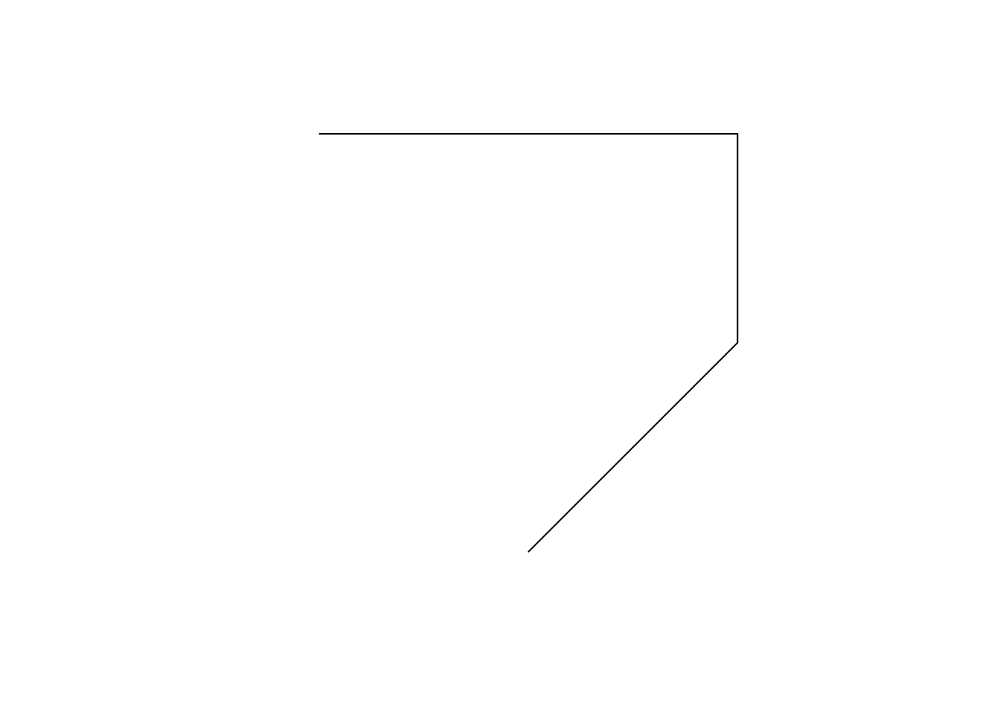
As you can see, each pair of consecutive points in the matrix are connected by a straight line to form a line.
2.2.1.3 POLYGON
A POLYGON is very similar to LINESTRING in the manner it is represented.
#--- collection of points in a matrix form ---#
p1 <- rbind(c(0, 0), c(3, 0), c(3, 2), c(2, 5), c(1, 3), c(0, 0))
#--- see what s1 looks like ---#
p1 [,1] [,2]
[1,] 0 0
[2,] 3 0
[3,] 3 2
[4,] 2 5
[5,] 1 3
[6,] 0 0#--- create a "POLYGON" ---#
a_polygon <- sf::st_polygon(list(p1))
#--- check the class ---#
class(a_polygon)[1] "XY" "POLYGON" "sfg" Figure 2.4 shows what the polygon looks like.
Code
plot(a_polygon)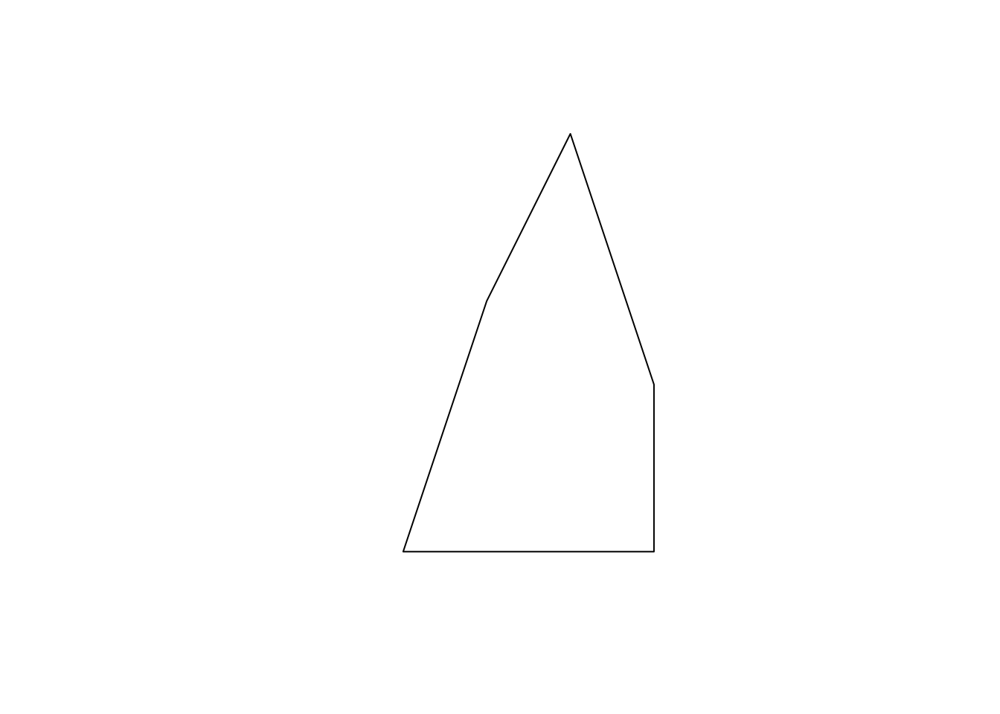
Just like the LINESTRING object we created earlier, a POLYGON is represented by a collection of points. The biggest difference between them is that we need to have some positive area enclosed by lines connecting the points. To do that, you have the the same point for the first and last points to close the loop: here, it’s c(0,0). A POLYGON can have holes in it. The first matrix of a list becomes the exterior ring, and all the subsequent matrices will be holes within the exterior ring.
Code
plot(a_plygon_with_a_hole)
2.2.1.4 MULTIPOLYGON
You can create a MULTIPOLYGON object in a similar manner. The only difference is that you supply a list of lists of matrices, with each inner list representing a polygon. An example below:
Code
plot(a_multipolygon)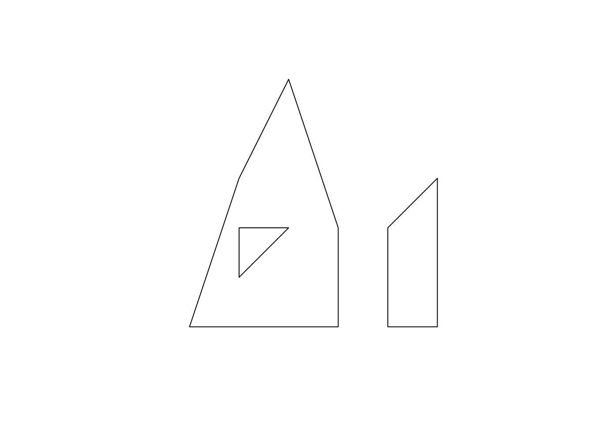
Each of list(p1,p2) and list(p3) represents a polygon. You supply a list of these lists to the st_multipolygon() function to make a MULTIPOLYGON object.
2.2.2 Create simple feature geometry list-column (sfc) and simple feature (sf) from scratch
To make a simple feature geometry list-column (sfc), you can simply supply a list of sfg to the st_sfc() function as follows:
To create an sf object, you first add an sfc as a column to a data.frame.
#--- create a data.frame ---#
df_ex <- data.frame(name = c("A", "B", "C", "D"))
#--- add the sfc as a column ---#
df_ex$geometry <- sfc_ex
#--- take a look ---#
df_ex name geometry
1 A POINT (2 1)
2 B LINESTRING (2 3, 3 4, 3 5, ...
3 C POLYGON ((0 0, 3 0, 3 2, 2 ...
4 D MULTIPOLYGON (((0 0, 3 0, 3...At this point, it is not yet recognized as an sf by R.
#--- see what it looks like (this is not an sf object yet) ---#
class(df_ex)[1] "data.frame"You can register it as an sf object using st_as_sf().
#--- let R recognize the data frame as sf ---#
sf_ex <- sf::st_as_sf(df_ex)
#--- see what it looks like ---#
sf_exSimple feature collection with 4 features and 1 field
Geometry type: GEOMETRY
Dimension: XY
Bounding box: xmin: 0 ymin: 0 xmax: 5 ymax: 5
CRS: NA
name geometry
1 A POINT (2 1)
2 B LINESTRING (2 3, 3 4, 3 5, ...
3 C POLYGON ((0 0, 3 0, 3 2, 2 ...
4 D MULTIPOLYGON (((0 0, 3 0, 3...As you can see sf_ex is now recognized also as an sf object.
#--- check the class ---#
class(sf_ex)[1] "sf" "data.frame"2.3 Reading and writing vector data
The vast majority of people use ArcGIS to handle spatial data, which has its own system of storing spatial data called shapefile. So, chances are that your collaborators use shapefiles. Moreover, there are many GIS data online that are available only as shapefiles. So, it is important to learn how to read and write shapefiles.
2.3.1 Reading a shapefile
We can use st_read() to read a shapefile. It reads in a shapefile and then turn the data into an sf object. Let’s take a look at an example.
#--- read a NE county boundary shapefile ---#
nc_loaded <- sf::st_read("Data/nc.shp")When storing a spatial dataset, the information in the dataset is divided into separate files. All of them have the same prefix, but have different extensions. We typically say we read a shapefile, but we really are importing all these files including the shapefile with the .shp extension.
2.3.2 Writing to a shapefile
Writing an sf object as a shapefile is just as easy. You use the sf::st_write() function, with the first argument being the name of the sf object you are exporting, and the second being the path to the new shapefile. For example, the code below will export an sf object called nc_loaded as nc2.shp (along with other supporting files).
sf::st_write(
nc_loaded,
dsn = "Data/nc2.shp",
driver = "ESRI Shapefile",
append = FALSE
)append = FALSE forces writing the data when a file already exists with the same name. Without the option, this happens.
sf::st_write(
nc_loaded,
dsn = "Data/nc2.shp",
layer = "nc2",
driver = "ESRI Shapefile"
)Layer nc2 in dataset Data/nc2.shp already exists:
use either append=TRUE to append to layer or append=FALSE to overwrite layerError: Dataset already exists.2.3.3 Better alternatives
If your collaborator uses ArcGIS and insists on a shapefile, you can certainly use the command above to generate one. However, there is no real need to rely on the shapefile format. Popular alternatives, such as GeoJSON and GeoPackage, are more efficient. Unlike shapefiles, which generate multiple files, these formats produce a single file with .geojson or .gpkg extensions, respectively6. Both formats are easily readable in ArcGIS, so it might be worth encouraging your collaborators to switch to these more modern formats.
6 It can be frustrating when a collaborator sends 15 files for just three geographic objects via email, which could have been reduced to three files using GeoJSON or GeoPackage.
geojson
gpkg
Or better yet, if your collaborator uses R (or if it is only you who is going to use the data), then just save it as an rds file using saveRDS(), which can be of course read using readRDS().
The use of rds files can be particularly attractive when the dataset is large because rds files are typically more memory efficient than shapefiles, eating up less of your disk memory.
2.4 Projection with a different Coordinate Reference Systems
You often need to reproject an sf using a different coordinate reference system (CRS) because you need it to have the same CRS as an sf object that you are interacting it with (spatial join) or mapping it with. In order to check the current CRS for an sf object, you can use the sf::st_crs() function.
sf::st_crs(nc)Coordinate Reference System:
User input: NAD27
wkt:
GEOGCRS["NAD27",
DATUM["North American Datum 1927",
ELLIPSOID["Clarke 1866",6378206.4,294.978698213898,
LENGTHUNIT["metre",1]]],
PRIMEM["Greenwich",0,
ANGLEUNIT["degree",0.0174532925199433]],
CS[ellipsoidal,2],
AXIS["latitude",north,
ORDER[1],
ANGLEUNIT["degree",0.0174532925199433]],
AXIS["longitude",east,
ORDER[2],
ANGLEUNIT["degree",0.0174532925199433]],
ID["EPSG",4267]]wkt stands for Well Known Text7, which is one of many many formats to store CRS information.8 4267 is the SRID (Spatial Reference System Identifier) defined by the European Petroleum Survey Group (EPSG) for the CRS9.
7 sf versions prior to 0.9 provides CRS information in the form of proj4string. The newer version of sf presents CRS in the form of wtk (see this slide). You can find the reason behind this change in the same slide, starting from here.
8 See here for numerous other formats that represent the same CRS.
9 You can find the CRS-EPSG number correspondence here.
10 Potential pool of CRS is infinite. Only the commonly-used CRS have been assigned EPSG SRID.
When you transform your sf using a different CRS, you can use its EPSG number if the CRS has an EPSG number.10 Let’s transform the sf to WGS 84 (another commonly used GCS), whose EPSG number is 4326. We can use the sf::st_transform() function to achieve that, with the first argument being the sf object you are transforming and the second being the EPSG number of the new CRS.
#--- transform ---#
nc_wgs84 <- sf::st_transform(nc, 4326)
#--- check if the transformation was successful ---#
sf::st_crs(nc_wgs84)Coordinate Reference System:
User input: EPSG:4326
wkt:
GEOGCRS["WGS 84",
ENSEMBLE["World Geodetic System 1984 ensemble",
MEMBER["World Geodetic System 1984 (Transit)"],
MEMBER["World Geodetic System 1984 (G730)"],
MEMBER["World Geodetic System 1984 (G873)"],
MEMBER["World Geodetic System 1984 (G1150)"],
MEMBER["World Geodetic System 1984 (G1674)"],
MEMBER["World Geodetic System 1984 (G1762)"],
MEMBER["World Geodetic System 1984 (G2139)"],
MEMBER["World Geodetic System 1984 (G2296)"],
ELLIPSOID["WGS 84",6378137,298.257223563,
LENGTHUNIT["metre",1]],
ENSEMBLEACCURACY[2.0]],
PRIMEM["Greenwich",0,
ANGLEUNIT["degree",0.0174532925199433]],
CS[ellipsoidal,2],
AXIS["geodetic latitude (Lat)",north,
ORDER[1],
ANGLEUNIT["degree",0.0174532925199433]],
AXIS["geodetic longitude (Lon)",east,
ORDER[2],
ANGLEUNIT["degree",0.0174532925199433]],
USAGE[
SCOPE["Horizontal component of 3D system."],
AREA["World."],
BBOX[-90,-180,90,180]],
ID["EPSG",4326]]Notice that wkt was also altered accordingly to reflect the change in CRS: datum was changed to WGS 84. Now, let’s transform (reproject) the data using NAD83 / UTM zone 17N CRS. Its EPSG number is \(26917\).11 So, the following code does the job.
11 See here.
#--- transform ---#
nc_utm17N <- sf::st_transform(nc_wgs84, 26917)
#--- check if the transformation was successful ---#
sf::st_crs(nc_utm17N)Coordinate Reference System:
User input: EPSG:26917
wkt:
PROJCRS["NAD83 / UTM zone 17N",
BASEGEOGCRS["NAD83",
DATUM["North American Datum 1983",
ELLIPSOID["GRS 1980",6378137,298.257222101,
LENGTHUNIT["metre",1]]],
PRIMEM["Greenwich",0,
ANGLEUNIT["degree",0.0174532925199433]],
ID["EPSG",4269]],
CONVERSION["UTM zone 17N",
METHOD["Transverse Mercator",
ID["EPSG",9807]],
PARAMETER["Latitude of natural origin",0,
ANGLEUNIT["degree",0.0174532925199433],
ID["EPSG",8801]],
PARAMETER["Longitude of natural origin",-81,
ANGLEUNIT["degree",0.0174532925199433],
ID["EPSG",8802]],
PARAMETER["Scale factor at natural origin",0.9996,
SCALEUNIT["unity",1],
ID["EPSG",8805]],
PARAMETER["False easting",500000,
LENGTHUNIT["metre",1],
ID["EPSG",8806]],
PARAMETER["False northing",0,
LENGTHUNIT["metre",1],
ID["EPSG",8807]]],
CS[Cartesian,2],
AXIS["(E)",east,
ORDER[1],
LENGTHUNIT["metre",1]],
AXIS["(N)",north,
ORDER[2],
LENGTHUNIT["metre",1]],
USAGE[
SCOPE["Engineering survey, topographic mapping."],
AREA["North America - between 84°W and 78°W - onshore and offshore. Canada - Nunavut; Ontario; Quebec. United States (USA) - Florida; Georgia; Kentucky; Maryland; Michigan; New York; North Carolina; Ohio; Pennsylvania; South Carolina; Tennessee; Virginia; West Virginia."],
BBOX[23.81,-84,84,-78]],
ID["EPSG",26917]]As you can see in its CRS information, the projection system is now UTM zone 17N.
You often need to change the CRS of an sf object when you interact (e.g., spatial subsetting, joining, etc) it with another sf object. In such a case, you can extract the CRS of the other sf object using sf::st_crs() and use it for transformation.12 So, you do not need to find the EPSG of the CRS of the sf object you are interacting it with.
12 In this example, we are using the same data with two different CRS. But, you get the point.
#--- transform ---#
nc_utm17N_2 <- sf::st_transform(nc_wgs84, sf::st_crs(nc_utm17N))
#--- check if the transformation was successful ---#
sf::st_crs(nc_utm17N_2)Coordinate Reference System:
User input: EPSG:26917
wkt:
PROJCRS["NAD83 / UTM zone 17N",
BASEGEOGCRS["NAD83",
DATUM["North American Datum 1983",
ELLIPSOID["GRS 1980",6378137,298.257222101,
LENGTHUNIT["metre",1]]],
PRIMEM["Greenwich",0,
ANGLEUNIT["degree",0.0174532925199433]],
ID["EPSG",4269]],
CONVERSION["UTM zone 17N",
METHOD["Transverse Mercator",
ID["EPSG",9807]],
PARAMETER["Latitude of natural origin",0,
ANGLEUNIT["degree",0.0174532925199433],
ID["EPSG",8801]],
PARAMETER["Longitude of natural origin",-81,
ANGLEUNIT["degree",0.0174532925199433],
ID["EPSG",8802]],
PARAMETER["Scale factor at natural origin",0.9996,
SCALEUNIT["unity",1],
ID["EPSG",8805]],
PARAMETER["False easting",500000,
LENGTHUNIT["metre",1],
ID["EPSG",8806]],
PARAMETER["False northing",0,
LENGTHUNIT["metre",1],
ID["EPSG",8807]]],
CS[Cartesian,2],
AXIS["(E)",east,
ORDER[1],
LENGTHUNIT["metre",1]],
AXIS["(N)",north,
ORDER[2],
LENGTHUNIT["metre",1]],
USAGE[
SCOPE["Engineering survey, topographic mapping."],
AREA["North America - between 84°W and 78°W - onshore and offshore. Canada - Nunavut; Ontario; Quebec. United States (USA) - Florida; Georgia; Kentucky; Maryland; Michigan; New York; North Carolina; Ohio; Pennsylvania; South Carolina; Tennessee; Virginia; West Virginia."],
BBOX[23.81,-84,84,-78]],
ID["EPSG",26917]]
2.5 Quick and interactive view of an sf object
2.5.1 Quick view
The easiest way to visualize an sf object is to use plot():
plot(nc)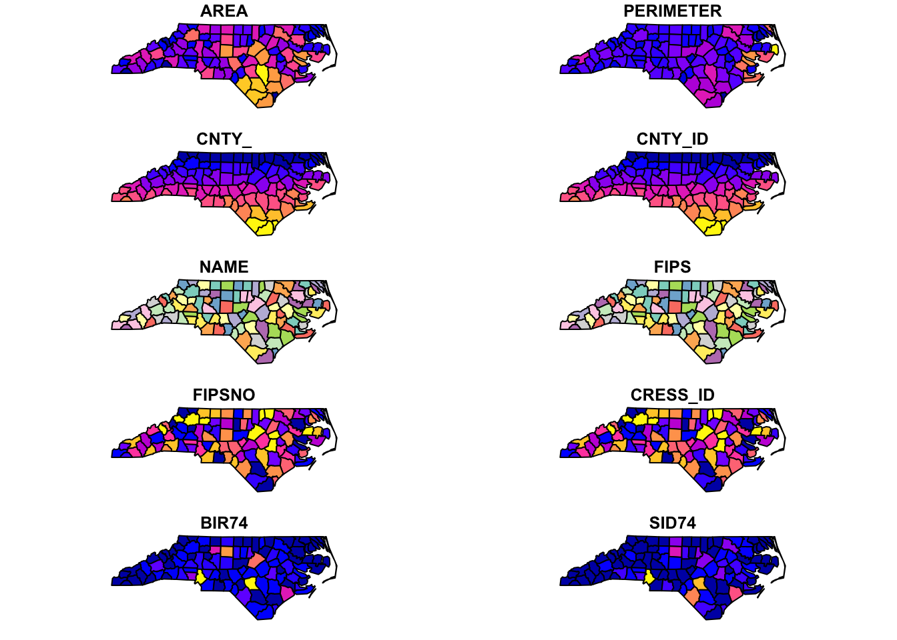
As you can see, plot() create a map for each variable where the spatial units are color-differentiated based on the values of the variable. For creating more elaborate maps that are of publication-quality, see Chapter 7.
2.5.2 Interactive view
Sometimes it is useful to be able to tell where certain spatial objects are and what values are associated with them on a map. The tmap_leaflet() function from the tmap package can create an interactive map where you can point to a spatial object and the associated information is revealed on the map. Let’s use the North Carolina county map as an example here:
As you can see, if you put your cursor on a polygon (county) and click on it, then its information pops up.
Alternatively, you could use the tmap package to create interactive maps. You can first create a static map following a syntax like this:
#--- NOT RUN (for polygons) ---#
tm_shape(sf) +
tm_polygons()
#--- NOT RUN (for points) ---#
tm_shape(sf) +
tm_symbols()This creates a static map of nc where county boundaries are drawn:
(
tm_nc_polygons <-
tm_shape(nc) +
tm_polygons()
)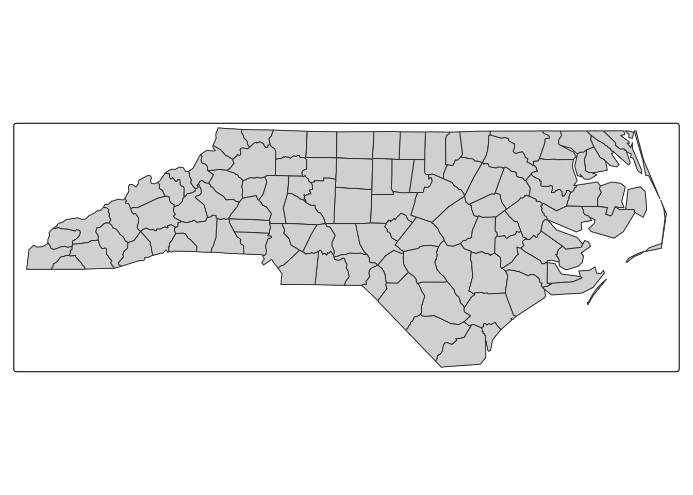
Then, you can apply tmap_leaflet() to the static map to have an interactive view of the map:
tmap_leaflet(tm_nc_polygons)You could also change the view mode of tmap objects to the view mode using tmap_mode("view") and then simply evaluate tm_nc_polygons.
#--- change to the "view" mode ---#
tmap_mode("view")
#--- now you have an interactive biew ---#
tm_nc_polygonsNote that once you change the view mode to “view”, then the evaluation of all tmap objects become interactive. I prefer the first option, as I need to revert the view mode back to “plot” by tmap_mode("plot") if I don’t want interactive views.
2.6 Turning a data.frame of points into an sf
Often times, you have a dataset with geographic coordinates as variables in a csv or other formats, which would not be recognized as a spatial dataset by R immediately when it is read into R. In this case, you need to identify which variables represent the geographic coordinates from the data set, and create an sf yourself. Fortunately, it is easy to do so using the st_as_sf() function. Let’s first read a dataset (irrigation wells in Nebraska):
#--- read irrigation well registration data ---#
(
wells <- readRDS("Data/well_registration.rds")
)Key: <wellid>
wellid ownerid nrdname acres regdate section longdd
<int> <int> <char> <num> <char> <int> <num>
1: 2 106106 Central Platte 160 12/30/55 3 -99.58401
2: 3 14133 South Platte 46 4/29/31 8 -102.62495
3: 4 14133 South Platte 46 4/29/31 8 -102.62495
4: 5 14133 South Platte 46 4/29/31 8 -102.62495
5: 6 15837 Central Platte 160 8/29/32 20 -99.62580
---
105818: 244568 135045 Upper Big Blue NA 8/26/16 30 -97.58872
105819: 244569 105428 Little Blue NA 8/26/16 24 -97.60752
105820: 244570 135045 Upper Big Blue NA 8/26/16 30 -97.58294
105821: 244571 135045 Upper Big Blue NA 8/26/16 25 -97.59775
105822: 244572 105428 Little Blue NA 8/26/16 15 -97.64086
latdd
<num>
1: 40.69825
2: 41.11699
3: 41.11699
4: 41.11699
5: 40.73268
---
105818: 40.89017
105819: 40.13257
105820: 40.88722
105821: 40.89639
105822: 40.13380#--- check the class ---#
class(wells)[1] "data.table" "data.frame"As you can see the data is not an sf object. In this dataset, longdd and latdd represent longitude and latitude, respectively. We now turn the dataset into an sf object:
#--- recognize it as an sf ---#
wells_sf <- sf::st_as_sf(wells, coords = c("longdd", "latdd"))
#--- take a look at the data ---#
head(wells_sf[, 1:5])Simple feature collection with 6 features and 5 fields
Geometry type: POINT
Dimension: XY
Bounding box: xmin: -102.6249 ymin: 40.69824 xmax: -99.58401 ymax: 41.11699
CRS: NA
wellid ownerid nrdname acres regdate geometry
1 2 106106 Central Platte 160 12/30/55 POINT (-99.58401 40.69825)
2 3 14133 South Platte 46 4/29/31 POINT (-102.6249 41.11699)
3 4 14133 South Platte 46 4/29/31 POINT (-102.6249 41.11699)
4 5 14133 South Platte 46 4/29/31 POINT (-102.6249 41.11699)
5 6 15837 Central Platte 160 8/29/32 POINT (-99.6258 40.73268)
6 7 90248 Central Platte 120 2/15/35 POINT (-99.64524 40.73164)Note that the CRS of wells_sf is NA. Obviously, \(R\) does not know the reference system without you telling it. We know13 that the geographic coordinates in the wells data is NAD 83 (\(epsg=4269\)) for this dataset. So, we can assign the right CRS using either sf::st_set_crs() or sf::st_crs().
13 Yes, YOU need to know the CRS of your data.
#--- set CRS ---#
wells_sf <- sf::st_set_crs(wells_sf, 4269)
#--- or this ---#
sf::st_crs(wells_sf) <- 4269
#--- see the change ---#
head(wells_sf[, 1:5])Simple feature collection with 6 features and 5 fields
Geometry type: POINT
Dimension: XY
Bounding box: xmin: -102.6249 ymin: 40.69824 xmax: -99.58401 ymax: 41.11699
Geodetic CRS: NAD83
wellid ownerid nrdname acres regdate geometry
1 2 106106 Central Platte 160 12/30/55 POINT (-99.58401 40.69825)
2 3 14133 South Platte 46 4/29/31 POINT (-102.6249 41.11699)
3 4 14133 South Platte 46 4/29/31 POINT (-102.6249 41.11699)
4 5 14133 South Platte 46 4/29/31 POINT (-102.6249 41.11699)
5 6 15837 Central Platte 160 8/29/32 POINT (-99.6258 40.73268)
6 7 90248 Central Platte 120 2/15/35 POINT (-99.64524 40.73164)2.7 Conversion to and from sp objects
You may find instances where sp objects are necessary or desirable. For example, some old spatial packages only accept sp objects. In such a case, it is good to know how to convert an sf object to an sp object, vice versa. You can convert an sf object to its sp counterpart using as(sf_object, "Spatial"):
#--- conversion ---#
wells_sp <- as(wells_sf, "Spatial")
#--- check the class ---#
class(wells_sp)[1] "SpatialPointsDataFrame"
attr(,"package")
[1] "sp"As you can see wells_sp is a class of SpatialPointsDataFrame, points with a data.frame supported by the sp package. The above syntax works for converting an sf of polygons into SpatialPolygonsDataFrame as well14.
14 The function does not work for an sf object that consists of different geometry types (e.g., POINT and POLYGON). This is because sp objects do not allow different types of geometries in the single sp object. For example, SpatialPointsDataFrame consists only of points data.
You can revert wells_sp back to an sf object using the st_as_sf() function, as follows:
#--- revert back to sf ---#
wells_sf <- sf::st_as_sf(wells_sp)
#--- check the class ---#
class(wells_sf)[1] "sf" "data.frame"We do not cover how to use the sp package as the benefit of learning it has become marginal compared to when sf was not yet mature15.
15 For those interested in learning the sp package, this website is a good resource.
2.8 Non-spatial transformation of sf
2.8.1 Using dplyr
An important feature of an sf object is that it is basically a data.frame with geometric information stored as a variable (column). This means that transforming an sf object works just like transforming a data.frame. Basically, everything you can do to a data.frame, you can do to an sf as well. The code below just provides an example of basic operations including dplyr::select(), dplyr::filter(), and dplyr::mutate() in action with an sf object to just confirm that dplyr operations works with an sf object just like a data.frame.
#--- here is what the data looks like ---#
dplyr::select(wells_sf, wellid, nrdname, acres, regdate, nrdname)Simple feature collection with 105822 features and 4 fields
Geometry type: POINT
Dimension: XY
Bounding box: xmin: -104.0531 ymin: 40.00161 xmax: -96.87681 ymax: 41.85942
Geodetic CRS: NAD83
First 10 features:
wellid nrdname acres regdate geometry
1 2 Central Platte 160 12/30/55 POINT (-99.58401 40.69825)
2 3 South Platte 46 4/29/31 POINT (-102.6249 41.11699)
3 4 South Platte 46 4/29/31 POINT (-102.6249 41.11699)
4 5 South Platte 46 4/29/31 POINT (-102.6249 41.11699)
5 6 Central Platte 160 8/29/32 POINT (-99.6258 40.73268)
6 7 Central Platte 120 2/15/35 POINT (-99.64524 40.73164)
7 8 South Platte 113 8/7/37 POINT (-103.5257 41.24492)
8 10 South Platte 160 5/4/38 POINT (-103.0284 41.13243)
9 11 Middle Republican 807 5/6/38 POINT (-101.1193 40.3527)
10 12 Middle Republican 148 11/29/77 POINT (-101.1146 40.35631)Notice that geometry column will be retained after dplyr::select() even if you did not tell R to keep it above.
Let’s apply dplyr::select(), dplyr::filter(), and dplyr::mutate() to the dataset.
#--- do some transformations ---#
wells_sf %>%
#--- select variables (geometry will always remain after select) ---#
dplyr::select(wellid, nrdname, acres, regdate, nrdname) %>%
#--- removes observations with acre < 30 ---#
dplyr::filter(acres > 30) %>%
#--- hectare instead of acre ---#
dplyr::mutate(hectare = acres * 0.404686)Simple feature collection with 63271 features and 5 fields
Geometry type: POINT
Dimension: XY
Bounding box: xmin: -104.0529 ymin: 40.00161 xmax: -96.87681 ymax: 41.73599
Geodetic CRS: NAD83
First 10 features:
wellid nrdname acres regdate geometry hectare
1 2 Central Platte 160 12/30/55 POINT (-99.58401 40.69825) 64.74976
2 3 South Platte 46 4/29/31 POINT (-102.6249 41.11699) 18.61556
3 4 South Platte 46 4/29/31 POINT (-102.6249 41.11699) 18.61556
4 5 South Platte 46 4/29/31 POINT (-102.6249 41.11699) 18.61556
5 6 Central Platte 160 8/29/32 POINT (-99.6258 40.73268) 64.74976
6 7 Central Platte 120 2/15/35 POINT (-99.64524 40.73164) 48.56232
7 8 South Platte 113 8/7/37 POINT (-103.5257 41.24492) 45.72952
8 10 South Platte 160 5/4/38 POINT (-103.0284 41.13243) 64.74976
9 11 Middle Republican 807 5/6/38 POINT (-101.1193 40.3527) 326.58160
10 12 Middle Republican 148 11/29/77 POINT (-101.1146 40.35631) 59.89353Now, let’s try to get a summary of a variable by group using the group_by() and summarize() functions. Here, we use only the first 100 observations because dplyr::summarize() takes just too long.
#--- summary by group ---#
wells_by_nrd <-
wells_sf[1:100, ] %>%
#--- group by nrdname ---#
dplyr::group_by(nrdname) %>%
#--- summarize ---#
dplyr::summarize(tot_acres = sum(acres, na.rm = TRUE))
#--- take a look ---#
wells_by_nrdSimple feature collection with 8 features and 2 fields
Geometry type: MULTIPOINT
Dimension: XY
Bounding box: xmin: -103.6467 ymin: 40.0475 xmax: -97.89758 ymax: 41.24492
Geodetic CRS: NAD83
# A tibble: 8 × 3
nrdname tot_acres geometry
<chr> <dbl> <MULTIPOINT [°]>
1 Central Platte 6690. ((-99.00983 40.7301), (-99.03167 40.71927), (-99.…
2 Lower Republican 350 ((-99.30403 40.05116), (-99.21946 40.05126), (-99…
3 Middle Republican 1396 ((-100.9216 40.18866), (-101.1663 40.36351), (-10…
4 South Platte 1381 ((-103.6467 41.2375), (-103.6128 41.23761), (-103…
5 Tri-Basin 480 ((-98.94967 40.64285), (-98.94906 40.65061), (-98…
6 Twin Platte 1098. ((-100.9571 41.18633), (-100.8659 41.14635), (-10…
7 Upper Big Blue 330 ((-97.89758 40.86156), (-97.89998 40.86336))
8 Upper Republican 480 ((-101.8858 40.47776), (-101.6501 40.6012))So, we can summarize an sf by group using dplyr::group_by() and dplyr::summarize(). One interesting change that happened is the geometry variable. Each NRD now has multipoint sfg, which is the combination of all the wells (points) located inside the NRD. Now, it is hard to imagine that you need summarized geometries after group summary. Moreover, it is a very slow operation. If you have lots of free time, try running the above code with wells_sf instead of wells_sf[1:100, ]. I never waited for it to finish as it was running for a long long time. It is advised that you simply drop the geometry and turn the sf object into a data.frame (or tibble, data.table) first and then do group summary.
#--- remove geometry ---#
wells_no_longer_sf <- sf::st_drop_geometry(wells_sf)
#--- take a look ---#
head(wells_no_longer_sf) wellid ownerid nrdname acres regdate section
1 2 106106 Central Platte 160 12/30/55 3
2 3 14133 South Platte 46 4/29/31 8
3 4 14133 South Platte 46 4/29/31 8
4 5 14133 South Platte 46 4/29/31 8
5 6 15837 Central Platte 160 8/29/32 20
6 7 90248 Central Platte 120 2/15/35 19We can now do a group summary very quickly:
wells_no_longer_sf %>%
#--- group by nrdname ---#
dplyr::group_by(nrdname) %>%
#--- summarize ---#
dplyr::summarize(tot_acres = sum(acres, na.rm = TRUE))# A tibble: 9 × 2
nrdname tot_acres
<chr> <dbl>
1 Central Platte 1890918.
2 Little Blue 995900.
3 Lower Republican 543079.
4 Middle Republican 443472.
5 South Platte 216109.
6 Tri-Basin 847058.
7 Twin Platte 452678.
8 Upper Big Blue 1804782.
9 Upper Republican 551906.
2.8.2 Using data.table
The data.table package provides data wrangling options that are extremely fast (see here for various benchmark results). It particularly shines when datasets are large and is much faster than dplyr. However, it cannot be as naturally integrated into the workflow involving sf objects as dplyr can. Let’s convert an sf object of points into a data.table object using data.table().
#--- convert an sf to data.table ---#
(
wells_dt <- data.table::data.table(wells_sf)
) wellid ownerid nrdname acres regdate section
<int> <int> <char> <num> <char> <int>
1: 2 106106 Central Platte 160 12/30/55 3
2: 3 14133 South Platte 46 4/29/31 8
3: 4 14133 South Platte 46 4/29/31 8
4: 5 14133 South Platte 46 4/29/31 8
5: 6 15837 Central Platte 160 8/29/32 20
---
105818: 244568 135045 Upper Big Blue NA 8/26/16 30
105819: 244569 105428 Little Blue NA 8/26/16 24
105820: 244570 135045 Upper Big Blue NA 8/26/16 30
105821: 244571 135045 Upper Big Blue NA 8/26/16 25
105822: 244572 105428 Little Blue NA 8/26/16 15
geometry
<sfc_POINT>
1: POINT (-99.58401 40.69825)
2: POINT (-102.6249 41.11699)
3: POINT (-102.6249 41.11699)
4: POINT (-102.6249 41.11699)
5: POINT (-99.6258 40.73268)
---
105818: POINT (-97.58872 40.89017)
105819: POINT (-97.60752 40.13257)
105820: POINT (-97.58294 40.88722)
105821: POINT (-97.59775 40.89639)
105822: POINT (-97.64086 40.1338)#--- check the class ---#
class(wells_dt)[1] "data.table" "data.frame"You see that wells_dt is no longer an sf object, but the geometry column still remains in the data.
If you attempt to run sf operations on a data.table object that contains a geometry column, you will encounter an error, as shown below:
sf::st_buffer(wells_dt, dist = 2)Error in UseMethod("st_buffer"): no applicable method for 'st_buffer' applied to an object of class "c('data.table', 'data.frame')"However, you can apply sf spatial operations only on the geometry like this:
Geometry set for 6 features
Geometry type: POLYGON
Dimension: XY
Bounding box: xmin: -102.625 ymin: 40.69823 xmax: -99.58398 ymax: 41.11701
Geodetic CRS: NAD83
First 5 geometries:Finally, it is easy to revert a data.table object back to an sf object again by using the st_as_sf() function.
#--- wells ---#
(
wells_sf_again <- sf::st_as_sf(wells_dt)
)Simple feature collection with 105822 features and 6 fields
Geometry type: POINT
Dimension: XY
Bounding box: xmin: -104.0531 ymin: 40.00161 xmax: -96.87681 ymax: 41.85942
Geodetic CRS: NAD83
First 10 features:
wellid ownerid nrdname acres regdate section
1 2 106106 Central Platte 160 12/30/55 3
2 3 14133 South Platte 46 4/29/31 8
3 4 14133 South Platte 46 4/29/31 8
4 5 14133 South Platte 46 4/29/31 8
5 6 15837 Central Platte 160 8/29/32 20
6 7 90248 Central Platte 120 2/15/35 19
7 8 48113 South Platte 113 8/7/37 28
8 10 17073 South Platte 160 5/4/38 2
9 11 98432 Middle Republican 807 5/6/38 36
10 12 79294 Middle Republican 148 11/29/77 31
geometry
1 POINT (-99.58401 40.69825)
2 POINT (-102.6249 41.11699)
3 POINT (-102.6249 41.11699)
4 POINT (-102.6249 41.11699)
5 POINT (-99.6258 40.73268)
6 POINT (-99.64524 40.73164)
7 POINT (-103.5257 41.24492)
8 POINT (-103.0284 41.13243)
9 POINT (-101.1193 40.3527)
10 POINT (-101.1146 40.35631)This means that if you need fast data transformation, you can first convert an sf object to a data.table, perform the necessary transformations using data.table functions, and then convert it back to an sf object if needed.
Those who know the dtplyr package (it takes advantage of the speed of data.table while you can keep using dplyr syntax and functions) may wonder if it works well with sf objects. Nope:
library(dtplyr)
#--- convert an "lazy" data.table ---#
wells_ldt <- lazy_dt(wells_sf)
#--- try ---#
sf::st_buffer(wells_ldt, dist = 2)Error in UseMethod("st_buffer"): no applicable method for 'st_buffer' applied to an object of class "c('dtplyr_step_first', 'dtplyr_step')"By the way, this package is awesome if you really love dplyr, but want the speed of data.table. dtplyr is of course slightly slower than data.table because internal translations of dplyr language to data.table language have to happen first.16
16 I personally use data.table unless it is necessary to use dplyr like operations when dealing with sf objects. It is more concise than dplyr, which is somewhat verbose (yet expressive because of it). Ultimately, it is your personal preference which to use. You might be interested in reading this discussion about the comparative advantages and disadvantages of the two packages.
2.9 Non-interactive geometrical operations
There are various geometrical operations that are particularly useful for economists. Here, some of the most commonly used geometrical operations are introduced17. You can see the practical use of some of these functions in Chapter 1.
17 For the complete list of available geometrical operations under the sf package, see here.
2.9.1 sf::st_buffer()
sf::st_buffer() creates a buffer around points, lines, or the border of polygons. Let’s create buffers around points. First, we read well locations data (Figure 2.7).
#--- read wells location data ---#
urnrd_wells_sf <-
readRDS("Data/urnrd_wells.rds") %>%
#--- project to UTM 14N WGS 84 ---#
sf::st_transform(32614)Code
ggplot(urnrd_wells_sf) +
geom_sf(size = 0.4, color = "red") +
theme_void()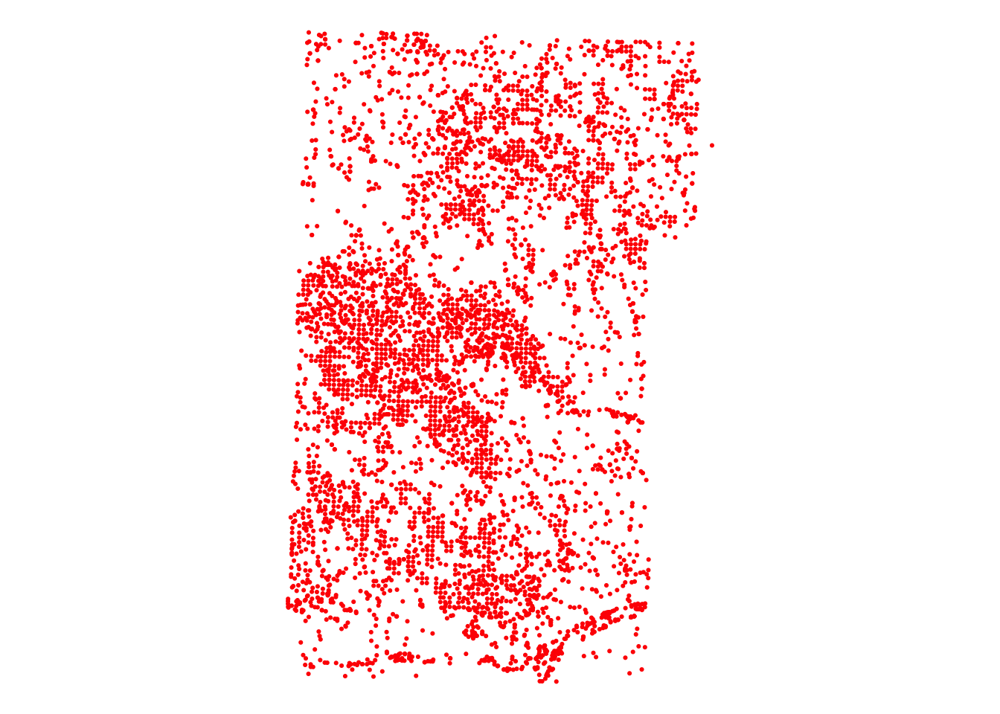
Let’s create buffers around the wells.
#--- create a one-mile buffer around the wells ---#
wells_buffer <- sf::st_buffer(urnrd_wells_sf, dist = 1600)As you can see, there are many circles around wells with the radius of \(1,600\) meters (Figure 2.8).
Code
ggplot() +
geom_sf(data = urnrd_wells_sf, size = 0.6, color = "red") +
geom_sf(data = wells_buffer, fill = NA) +
theme_void()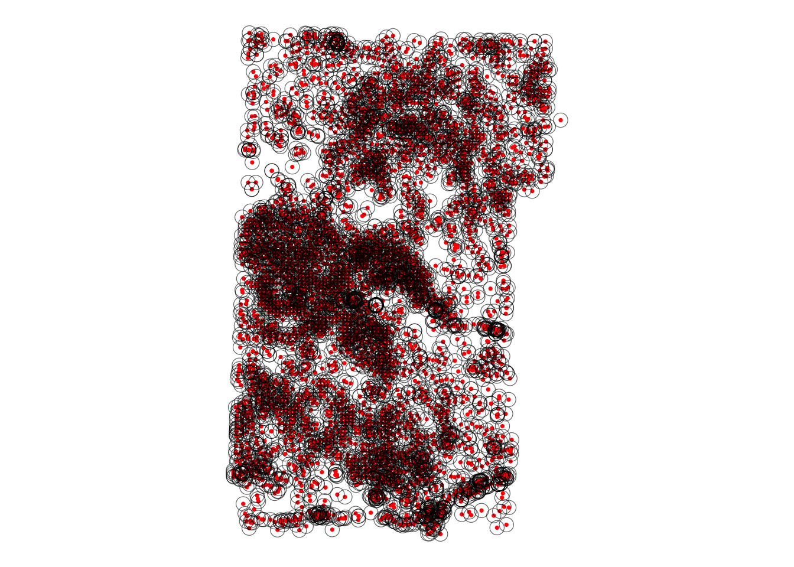
A practical application of buffer creation can be seen in Section 1.1.
We now create buffers around polygons. First, read county boundary data and select three counties (Chase, Dundy, and Perkins) in Nebraska (Figure 2.9).
NE_counties <-
readRDS("Data/NE_county_borders.rds") %>%
dplyr::filter(NAME %in% c("Perkins", "Dundy", "Chase")) %>%
sf::st_transform(32614)Code
ggplot(NE_counties) +
geom_sf(aes(fill = NAME)) +
scale_fill_brewer(name = "County", palette = "RdYlGn") +
theme_void()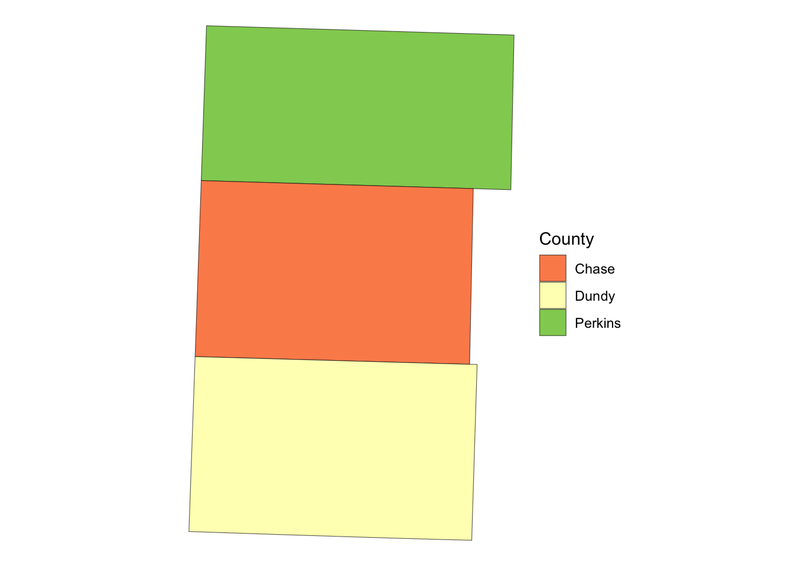
The following code creates buffers around polygons:
NE_buffer <- sf::st_buffer(NE_counties, dist = 2000)Code
ggplot() +
geom_sf(data = NE_buffer, fill = "blue", alpha = 0.3) +
geom_sf(data = NE_counties, aes(fill = NAME)) +
scale_fill_brewer(name = "County", palette = "RdYlGn") +
theme_void()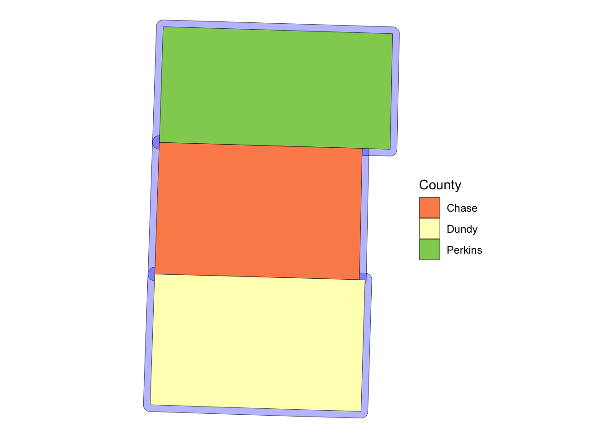
For example, this can be useful to identify observations which are close to the border of political boundaries when you want to take advantage of spatial discontinuity of policies across adjacent political boundaries.
2.9.2 sf::st_area()
The sf::st_area() function calculates the area of polygons.
#--- generate area by polygon ---#
(
NE_counties <- dplyr::mutate(NE_counties, area = st_area(NE_counties))
)Simple feature collection with 3 features and 10 fields
Geometry type: MULTIPOLYGON
Dimension: XY
Bounding box: xmin: 239494.1 ymin: 4430632 xmax: 310778.1 ymax: 4543676
Projected CRS: WGS 84 / UTM zone 14N
STATEFP COUNTYFP COUNTYNS AFFGEOID GEOID NAME LSAD ALAND
1 31 135 00835889 0500000US31135 31135 Perkins 06 2287828025
2 31 029 00835836 0500000US31029 31029 Chase 06 2316533447
3 31 057 00835850 0500000US31057 31057 Dundy 06 2381956151
AWATER geometry area
1 2840176 MULTIPOLYGON (((243340.2 45... 2302174854 [m^2]
2 7978172 MULTIPOLYGON (((241201.4 44... 2316908196 [m^2]
3 3046331 MULTIPOLYGON (((240811.3 44... 2389890530 [m^2]Now, as you can see below, the default class of the results of sf::st_area() is units, which does not accept numerical operations.
class(NE_counties$area)[1] "units"So, let’s turn it into double.
(
NE_counties <- dplyr::mutate(NE_counties, area = as.numeric(area))
)Simple feature collection with 3 features and 10 fields
Geometry type: MULTIPOLYGON
Dimension: XY
Bounding box: xmin: 239494.1 ymin: 4430632 xmax: 310778.1 ymax: 4543676
Projected CRS: WGS 84 / UTM zone 14N
STATEFP COUNTYFP COUNTYNS AFFGEOID GEOID NAME LSAD ALAND
1 31 135 00835889 0500000US31135 31135 Perkins 06 2287828025
2 31 029 00835836 0500000US31029 31029 Chase 06 2316533447
3 31 057 00835850 0500000US31057 31057 Dundy 06 2381956151
AWATER geometry area
1 2840176 MULTIPOLYGON (((243340.2 45... 2302174854
2 7978172 MULTIPOLYGON (((241201.4 44... 2316908196
3 3046331 MULTIPOLYGON (((240811.3 44... 2389890530sf::st_area() is useful when you want to find area-weighted average of characteristics after spatially joining two polygon layers using the st_intersection() function (See Section 4.4.1.3).
2.9.3 sf::st_centroid()
The sf::st_centroid() function finds the centroid of each polygon (Figure 2.11).
#--- create centroids ---#
(
NE_centroids <- sf::st_centroid(NE_counties)
)Simple feature collection with 3 features and 10 fields
Geometry type: POINT
Dimension: XY
Bounding box: xmin: 271156.7 ymin: 4450826 xmax: 276594.1 ymax: 4525635
Projected CRS: WGS 84 / UTM zone 14N
STATEFP COUNTYFP COUNTYNS AFFGEOID GEOID NAME LSAD ALAND
1 31 135 00835889 0500000US31135 31135 Perkins 06 2287828025
2 31 029 00835836 0500000US31029 31029 Chase 06 2316533447
3 31 057 00835850 0500000US31057 31057 Dundy 06 2381956151
AWATER geometry area
1 2840176 POINT (276594.1 4525635) 2302174854
2 7978172 POINT (271469.9 4489429) 2316908196
3 3046331 POINT (271156.7 4450826) 2389890530Code
ggplot() +
geom_sf(data = NE_counties) +
geom_sf(data = NE_centroids) +
theme_void()It can be useful when creating a map with labels because the centroid of polygons tend to be a good place to place labels (Figure 2.12).18
18 When creating maps with the ggplot2 package, you can use geom_sf_text() or geom_sf_label(), which automatically finds where to put texts. See some examples here.
Code
ggplot() +
geom_sf(data = NE_counties) +
geom_sf_text(data = NE_centroids, aes(label = NAME)) +
theme_void()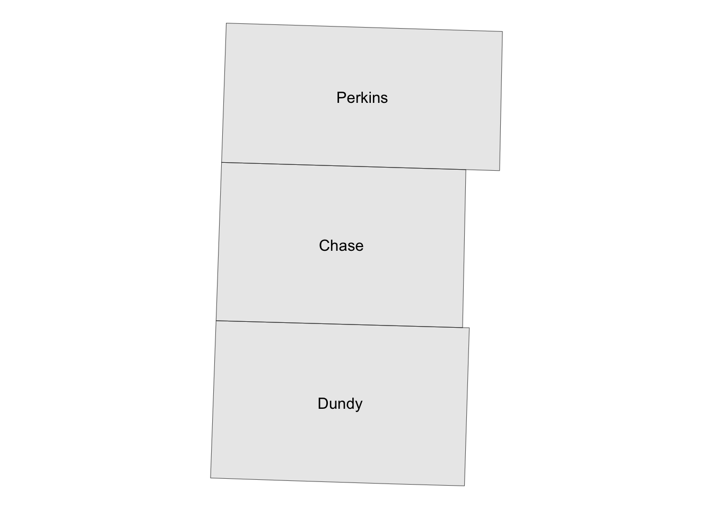
2.9.4 sf::st_length()
We can use sf::st_length() to calculate great circle distances19 of LINESTRING and MULTILINESTRING when they are represented in geodetic coordinates. On the other hand, if they are projected and use a Cartesian coordinate system, it will calculate Euclidean distance. We use U.S. railroad data for a demonstration.
19 Great circle distance is the shortest distance between two points on the surface of a sphere (earth)
#--- import US railroad data and take only the first 10 of it ---#
(
a_railroad <- rail_roads <- sf::st_read(dsn = "Data", layer = "tl_2015_us_rails")[1:10, ]
)Reading layer `tl_2015_us_rails' from data source
`/Users/taromieno/Library/CloudStorage/Dropbox/TeachingUNL/R-as-GIS-for-Scientists/chapters/Data'
using driver `ESRI Shapefile'
Simple feature collection with 180958 features and 3 fields
Geometry type: MULTILINESTRING
Dimension: XY
Bounding box: xmin: -165.4011 ymin: 17.95174 xmax: -65.74931 ymax: 65.00006
Geodetic CRS: NAD83Simple feature collection with 10 features and 3 fields
Geometry type: MULTILINESTRING
Dimension: XY
Bounding box: xmin: -79.74031 ymin: 35.0571 xmax: -79.2377 ymax: 35.51776
Geodetic CRS: NAD83
LINEARID FULLNAME MTFCC geometry
1 11020239500 Norfolk Southern Rlwy R1011 MULTILINESTRING ((-79.47058...
2 11020239501 Norfolk Southern Rlwy R1011 MULTILINESTRING ((-79.46687...
3 11020239502 Norfolk Southern Rlwy R1011 MULTILINESTRING ((-79.6682 ...
4 11020239503 Norfolk Southern Rlwy R1011 MULTILINESTRING ((-79.46687...
5 11020239504 Norfolk Southern Rlwy R1011 MULTILINESTRING ((-79.74031...
6 11020239575 Seaboard Coast Line RR R1011 MULTILINESTRING ((-79.43695...
7 11020239576 Seaboard Coast Line RR R1011 MULTILINESTRING ((-79.47852...
8 11020239577 Seaboard Coast Line RR R1011 MULTILINESTRING ((-79.43695...
9 11020239589 Aberdeen and Rockfish RR R1011 MULTILINESTRING ((-79.38736...
10 11020239591 Aberdeen and Briar Patch RR R1011 MULTILINESTRING ((-79.53848...#--- check CRS ---#
sf::st_crs(a_railroad)Coordinate Reference System:
User input: NAD83
wkt:
GEOGCRS["NAD83",
DATUM["North American Datum 1983",
ELLIPSOID["GRS 1980",6378137,298.257222101,
LENGTHUNIT["metre",1]]],
PRIMEM["Greenwich",0,
ANGLEUNIT["degree",0.0174532925199433]],
CS[ellipsoidal,2],
AXIS["latitude",north,
ORDER[1],
ANGLEUNIT["degree",0.0174532925199433]],
AXIS["longitude",east,
ORDER[2],
ANGLEUNIT["degree",0.0174532925199433]],
ID["EPSG",4269]]It uses geodetic coordinate system. Let’s calculate the great circle distance of the lines (Section 1.4 for a practical use case of this function).
(
a_railroad <- mutate(a_railroad, length = sf::st_length(a_railroad))
)Simple feature collection with 10 features and 4 fields
Geometry type: MULTILINESTRING
Dimension: XY
Bounding box: xmin: -79.74031 ymin: 35.0571 xmax: -79.2377 ymax: 35.51776
Geodetic CRS: NAD83
LINEARID FULLNAME MTFCC geometry
1 11020239500 Norfolk Southern Rlwy R1011 MULTILINESTRING ((-79.47058...
2 11020239501 Norfolk Southern Rlwy R1011 MULTILINESTRING ((-79.46687...
3 11020239502 Norfolk Southern Rlwy R1011 MULTILINESTRING ((-79.6682 ...
4 11020239503 Norfolk Southern Rlwy R1011 MULTILINESTRING ((-79.46687...
5 11020239504 Norfolk Southern Rlwy R1011 MULTILINESTRING ((-79.74031...
6 11020239575 Seaboard Coast Line RR R1011 MULTILINESTRING ((-79.43695...
7 11020239576 Seaboard Coast Line RR R1011 MULTILINESTRING ((-79.47852...
8 11020239577 Seaboard Coast Line RR R1011 MULTILINESTRING ((-79.43695...
9 11020239589 Aberdeen and Rockfish RR R1011 MULTILINESTRING ((-79.38736...
10 11020239591 Aberdeen and Briar Patch RR R1011 MULTILINESTRING ((-79.53848...
length
1 662.0043 [m]
2 658.1026 [m]
3 19953.8571 [m]
4 13880.5060 [m]
5 7183.7286 [m]
6 1062.4649 [m]
7 7832.3375 [m]
8 31773.7700 [m]
9 4544.6795 [m]
10 17101.8581 [m]
2.9.5 sf::st_distance()
sf::st_distance calculates distances between sfgs. Its output is the matrix of distances whose \(i,j\) element is the distance between the \(i\)th sfg of the first sf and \(j\)th sfg of the second sf. The following code find the distance between the first 10 wells in urnrd_wells_sf.
st_distance(urnrd_wells_sf[1:10, ], urnrd_wells_sf[1:10, ])Units: [m]
[,1] [,2] [,3] [,4] [,5] [,6] [,7]
[1,] 0.00 24224.9674 24007.0480 19678.000 26974.04 25490.735 21710.2051
[2,] 24224.97 0.0000 386.7858 8137.875 44632.84 2180.034 14285.1996
[3,] 24007.05 386.7858 0.0000 7754.775 44610.53 2067.106 13901.5230
[4,] 19678.00 8137.8750 7754.7753 0.000 43774.40 7892.077 6753.1200
[5,] 26974.04 44632.8443 44610.5290 43774.401 0.00 46610.537 47713.4334
[6,] 25490.73 2180.0343 2067.1055 7892.077 46610.54 0.000 13362.2041
[7,] 21710.21 14285.1996 13901.5230 6753.120 47713.43 13362.204 0.0000
[8,] 22029.35 14345.1319 13962.6364 6909.932 48027.14 13377.109 319.3365
[9,] 17243.59 18297.5078 17916.8399 10172.159 44061.21 17978.355 6297.5682
[10,] 25184.43 6052.8916 5747.7464 5709.523 48215.58 4340.971 9505.0583
[,8] [,9] [,10]
[1,] 22029.3535 17243.589 25184.434
[2,] 14345.1319 18297.508 6052.892
[3,] 13962.6364 17916.840 5747.746
[4,] 6909.9319 10172.159 5709.523
[5,] 48027.1382 44061.209 48215.582
[6,] 13377.1087 17978.355 4340.971
[7,] 319.3365 6297.568 9505.058
[8,] 0.0000 6543.339 9465.084
[9,] 6543.3389 0.000 14832.639
[10,] 9465.0840 14832.639 0.000
2.9.6 sf::st_union() and sf::st_combine()
While sf::st_combine() combines multiple sfgs in a single sf object into a single sfg without resolving the internal borders, sf::st_union() does so with the internal borders resolved. Let’s take a look at what sf::st_combine() does first using NE_counties.
NE_counties has three features as you can see below.
NE_countiesSimple feature collection with 3 features and 10 fields
Geometry type: MULTIPOLYGON
Dimension: XY
Bounding box: xmin: 239494.1 ymin: 4430632 xmax: 310778.1 ymax: 4543676
Projected CRS: WGS 84 / UTM zone 14N
STATEFP COUNTYFP COUNTYNS AFFGEOID GEOID NAME LSAD ALAND
1 31 135 00835889 0500000US31135 31135 Perkins 06 2287828025
2 31 029 00835836 0500000US31029 31029 Chase 06 2316533447
3 31 057 00835850 0500000US31057 31057 Dundy 06 2381956151
AWATER geometry area
1 2840176 MULTIPOLYGON (((243340.2 45... 2302174854
2 7978172 MULTIPOLYGON (((241201.4 44... 2316908196
3 3046331 MULTIPOLYGON (((240811.3 44... 2389890530After applying sf::st_combine(), the resulting object has only a single feature.
(
NE_counties_combined <- sf::st_combine(NE_counties)
)Geometry set for 1 feature
Geometry type: MULTIPOLYGON
Dimension: XY
Bounding box: xmin: 239494.1 ymin: 4430632 xmax: 310778.1 ymax: 4543676
Projected CRS: WGS 84 / UTM zone 14NCode
ggplot(NE_counties_combined) +
geom_sf() +
theme_void()As you can see in Figure 2.13, the internal borders did not get resolved. It is just that all the three counties are now recognized as a single feature rather than three separate features.
On the other hand, sf::st_union() resolve the internal borders, while combining all the features (Figure 2.14). A use case of sf::st_union() can be seen in Section 1.6.
(
NE_counties_union <- sf::st_union(NE_counties)
)Geometry set for 1 feature
Geometry type: POLYGON
Dimension: XY
Bounding box: xmin: 239494.1 ymin: 4430632 xmax: 310778.1 ymax: 4543676
Projected CRS: WGS 84 / UTM zone 14NCode
ggplot(data = NE_counties_union) +
geom_sf() +
theme_void()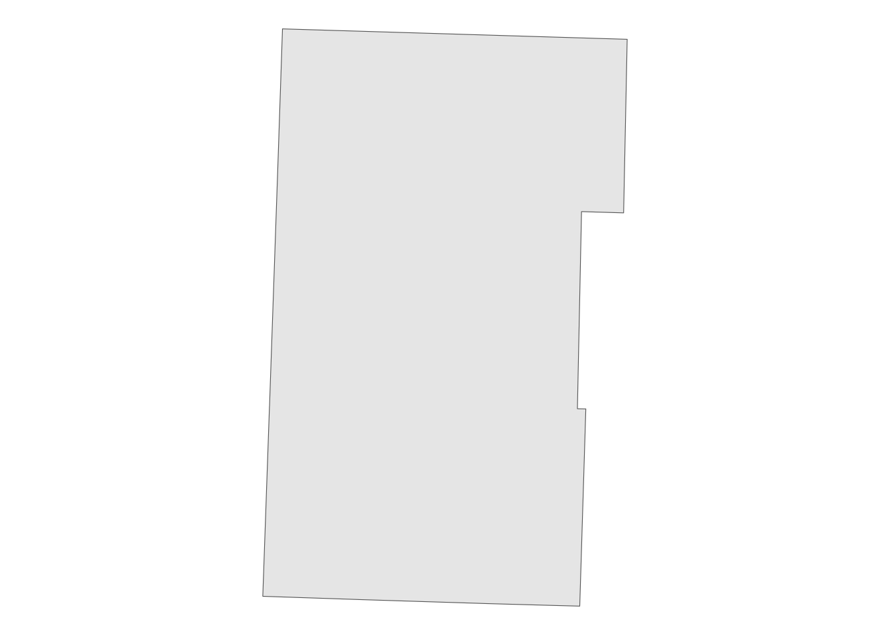
Note also that the resulting objects of sf::st_combine() and sf::st_union() are no longer sf, rather they are sfc, which do not retain the original variables in NE_counties.
2.9.7 sf::st_simplify() and rmapshaper::ms_simplify()
Sometimes, a vector data is excessively detailed for your purpose. For example, when showing the relative location of Japan to the surrounding countries in a map, the spatial object representing Japan does not have to be very accurate in its coastlines, say at the meter level. In such cases, you can simplify the spatial object using sf::st_simplify() so that you can render the map much faster.
Here, we use IL County borders for illustration (Figure 2.15).
IL_counties <- sf::st_read("Data/IL_county_detailed.geojson")Reading layer `IL_county_detailed' from data source
`/Users/taromieno/Library/CloudStorage/Dropbox/TeachingUNL/R-as-GIS-for-Scientists/chapters/Data/IL_county_detailed.geojson'
using driver `GeoJSON'
Simple feature collection with 102 features and 61 fields
Geometry type: MULTIPOLYGON
Dimension: XY
Bounding box: xmin: -91.51309 ymin: 36.9703 xmax: -87.4952 ymax: 42.50849
Geodetic CRS: WGS 84Code
ggplot(IL_counties) +
geom_sf() +
theme_void()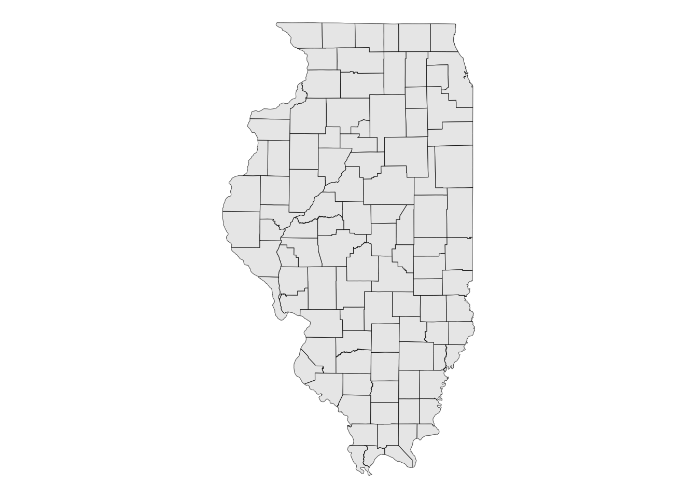
Here is the object size of IL_counties.
object.size(IL_counties)1628016 bytesWhen you focus on a single county, you can see that county borders in this data are fairly detailed. Let’s look at the Cook county (Figure 2.16).
Cook <- filter(IL_counties, NAME == "Cook County")Code
(
g_cook_original <-
ggplot(Cook) +
geom_sf() +
theme_void()
)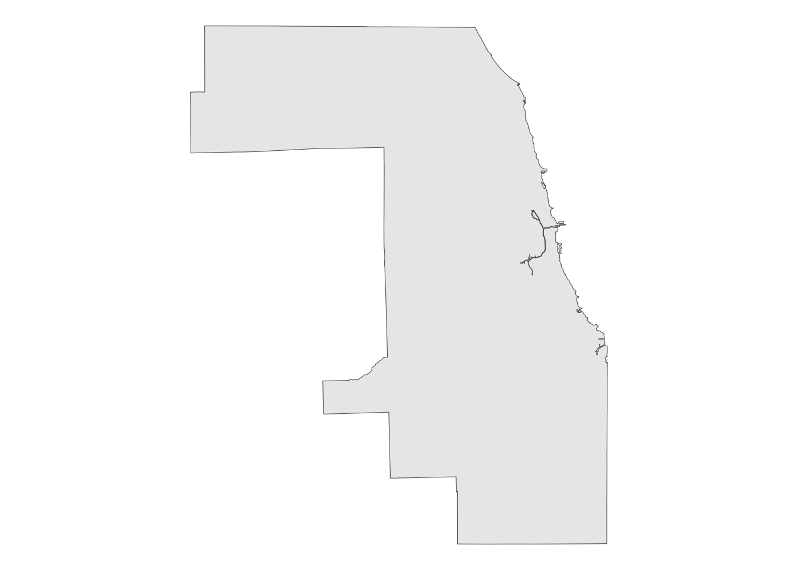
You can see that its border with Lake Michigan has lots of non-linear segments. Let’s simplify this using sf::st_simplify(). We can use the dTolerance option to specify the degree of simplification.
Cook_simplified <- sf::st_simplify(Cook, dTolerance = 1000)Figure 2.17 below compares the original (left) and simplified (right) versions.
Code
g_cook_simplified <-
ggplot(Cook_simplified) +
geom_sf() +
theme_void()
g_cook_original | g_cook_simplified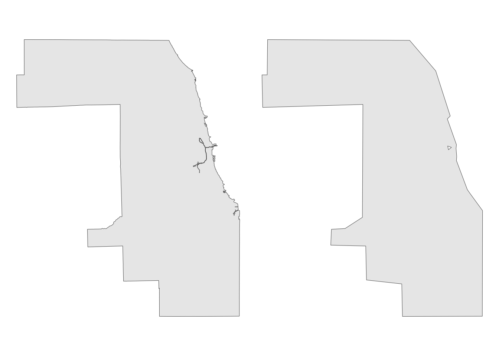
Let’s now simplify IL_counties using sf::st_simplify() to make its map light-weight (Figure 2.18).
IL_counties_simplified <- sf::st_simplify(IL_counties, dTolerance = 1000)Code
ggplot(IL_counties_simplified) +
geom_sf(fill = "blue", alpha = 0.5) +
theme_void()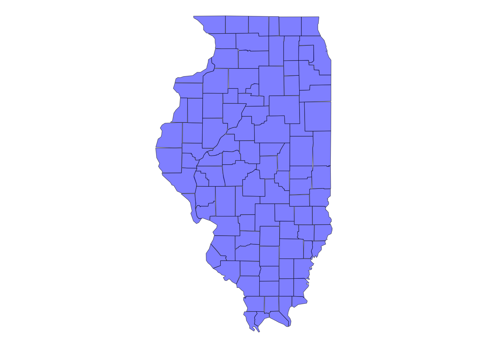
You probably notice we now have some gaps between some counties. This is because sf::st_simplify() does not respect the internal borders. To simplify only the outer borders, you can use rmapshaper::ms_simplify(). The keep option controls the degree of simplification (the lower, the more simplified).
IL_counties_mssimplified <- rmapshaper::ms_simplify(IL_counties, keep = 0.01)Code
ggplot(IL_counties_mssimplified) +
geom_sf(fill = "blue", alpha = 0.5) +
theme_void()You can see that internal borders are simplified in a way that does not create holes (see Section 1.6 for an application that makes use of rmapshaper::ms_simplify()).
2.10 Exercises
2.10.1 Exercise 1: Projection
After running data(fairway_grid), check the CRS of fairway_grid and then transform it using WGS84 (look up the EPSG code for WGS84).20
20 Hint: see Section 2.4
Code
data(fairway_grid)
sf::st_crs(fairway_grid)
sf::st_transform(fairway_grid, 4326)
2.10.2 Exercise 2: Turn a data.frame of points into an sf
Using the LAT (latitude) and LNG (longitude) columns in mower_sensor, turn the tibble into an sf, and then assign the CRS of WGS 84 using its EPSG code.21
21 Hint: see Section 2.6
Code
st_as_sf(
mower_sensor,
coords = c("LNG", "LAT"),
crs = 4326
)2.10.3 Exercise 3: Centroid and distance
Find the centroid of the polygons in fairway_grid and then calculate the distance between the centroids. Which polygon is the closest to the first polygon recorded in fairway_grid?22
22 Hint: see Section 2.9.3 and Section 2.9.5
Code
data(fairway_grid)
centroids <- sf::st_centroid(fairway_grid)
dist_mat <- sf::st_distance(centroids)
which.min(dist_mat[1, ][-1]) + 1